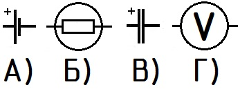
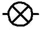
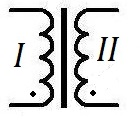
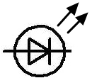
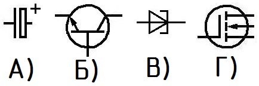
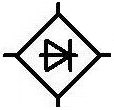
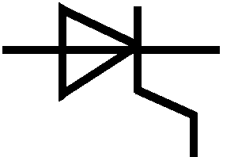
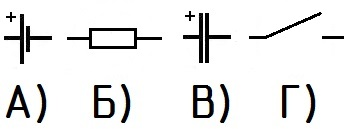
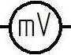
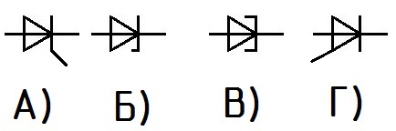

1. Какое изображение соответствует условному обозначению элемента питания?

2. Условное обозначение какого элемента схемы изображено на рисунке?

3. Какое позиционное обозначение соответствует переменному резистору?
4. Условное обозначение какого устройства изображено на рисунке?

5. Условное обозначение какого элемента схемы изображено на рисунке?

6. Какое изображение соответствует условному обозначению биполярного транзистора?

7. Какое позиционное обозначение соответствует выключателю?
8. Условное обозначение какого элемента схемы изображено на рисунке?

9. Условное обозначение какого элемента схемы изображено на рисунке?

10. Какое изображение соответствует условному обозначению выключателя?

11. Условное обозначение какого измерительного прибора приведено на рисунке?

12. Какое изображение соответствует условному обозначению стабилитрона?
